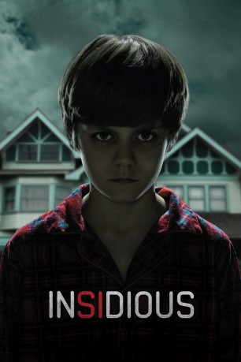

#4761 Insidious
 
 IMDB-Wertung: 6.8 / 10
IMDB-Wertung: 6.8 / 10  Metascore: 0
Metascore: 0 
Neues Haus, neues Glück: Für den Lehrer Josh Lambert, seine Frau Renai und ihre drei Kinder ist der Umzug die Erfüllung eines lange gehegten Wunschtraums. Die Freude währt indes nur kurz: Schnell wird der Familie bewusst, dass ihr neues Heim von düsteren Geistern heimgesucht wird. Nach einem mysteriösen Unfall fällt ihr Sohn Dalton in ein Koma, das selbst die besten Ärzte vor ein Rätsel stellt. Mit einem erneuten Umzug wollen die Lamberts ihren Sohn retten und dem unablässigen Terror entfliehen. Doch dann müssen sie feststellen, dass es nicht das Haus war, auf das die Dämonen es abgesehen haben...
Jahr: 2010
Dauer: 102 Minuten
FSK: 16
Land: USA Studio: Filmdistrict DistributionTonspuren: DTS-HD - ,
Untertitel: Deutsch, Englisch,
Auflösung: 1080p (1920x800) Größe: 6041 MB
Genre: Thriller, Horror, Mystery
Regisseur: James Wan
Drehbuch: Martin Donovan
Soundtrack:
Darsteller:
 Patrick Wilson als Josh Lambert
Patrick Wilson als Josh Lambert Rose Byrne als Renai Lambert
Rose Byrne als Renai Lambert Ty Simpkins als Dalton Lambert
Ty Simpkins als Dalton Lambert Lin Shaye als Elise Rainier
Lin Shaye als Elise Rainier Leigh Whannell als Specs
Leigh Whannell als Specs Angus Sampson als Tucker
Angus Sampson als Tucker Barbara Hershey als Lorraine Lambert
Barbara Hershey als Lorraine Lambert Andrew Astor als Foster Lambert
Andrew Astor als Foster Lambert- Corbett Tuck als Nurse Adele / Doll Girl #2
- Ruben Pla als Dr. Sercarz
 Joseph Bishara als Lipstick-Face Demon
Joseph Bishara als Lipstick-Face Demon- Philip Friedman als Old Woman
 J. LaRose als Long Haired Fiend
J. LaRose als Long Haired Fiend- Josh Feldman als Young Josh , uncredited
- Caslin Rose als Contortionist / Ghoul , uncredited
- Jeannette Sousa als Dr. Thimble , uncredited
- Heather Tocquigny als Nurse Kelly
- John Henry Binder als Father Martin
- Kelly Hitman als Doll Girl #1
- Omar Apanco Salgado als Hispanic Student , uncredited
Datei: X:\4-Tetralogie(A-K)\Insidious\Insidious (2010, FSK16, 1920x800).mkv seit 14.11.2016
Festplatte: HD Collection-3(N-Z)-6(A-Z)
 Es gibt insgesamt 7 Filme in der Gruppe '4-Tetralogie(A-K)\Insidious'
Es gibt insgesamt 7 Filme in der Gruppe '4-Tetralogie(A-K)\Insidious'